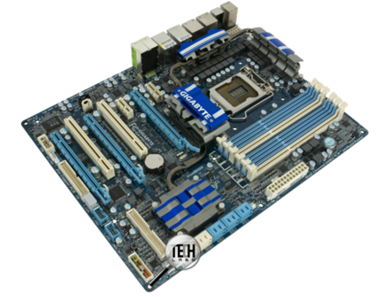

Материнская плата, также называемая главной или системной платой (в разговорах специалистов просто “мать”), представляет собой одно из основных устройств в компьютере и обеспечивает связь между всеми элементами. При продаже плата часто называется не по ее типу, а по типу центрального процессора, например, плата для Intel i3. Она изготовляется из стекловолокна, причем состоит из нескольких листов, на которые наносятся контакты (так называемая печатная плата) и имеет многослойную структуру.
Материнская плата крепится к стойке несколькими винтами. На ней располагаются следующие основные элементы: процессор, оперативная память, набор управляющих микросхем (чипсет), BIOS, кэш-память, шины, слоты расширения, батарейка и другие устройства. Кроме вышеперечисленных устройств, на плате имеются разъемы для параллельных, последовательных портов (для подключения клавиатуры и мыши), источника питания, встроенного динамика, индикаторов и кнопок, находящихся на передней панели системного блока. Тип материнской платы влияет на производительность компьютера и определяет те устройства, которые можно к ней подключить.
Форм-фактор материнской платы определяет её размеры, расположение крепежных отверстий, тип разъема для подключения питания и расположение интерфейсов. Существуют различные формафакторы материнских плат:
|  | Для передачи данных между устройствами, расположенными на материнской плате, используются проводники, называемые шиной. Шины используются для передачи информации между устройствами и могут быть нескольких видов: шина главного процессора (на которой работает процессор и кэш-память), системная шина. Системная шина является основным источником передачи информации между устройствами, находящимися на материнской плате и вне ее, такими, как оперативная память, процессор, клавиатура, жесткий диск, флоппи-дисковод, клавиатура, мышь и так далее. Конечно, такое взаимодействие происходит не напрямую, а через специальные устройства, называемые контроллерами. Так, например, существует контроллер для клавиатуры, шины расширения (через которую происходит обмен информацией между внешними устройствами и устройствами на материнской плате, такими как звуковая плата, дисплей, сканер) и другие. Характеристики адресной шины и шины данных рассмотрены при описании процессоров, а шины расширения - далее в этой главе. |
|---|